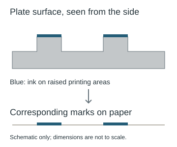

Blake prints: plates, impressions, and copies
Understand relief etching and distinguish a composition, an individual print, and the digital image used for a cover comparison.
On this page
The cover studies refer to a design, a print, a copy, and a digital reproduction. These are different objects. Understanding the distinction helps explain why identifying a Blake composition does not automatically identify the image used in the compasses collage.
What is relief etching?
In Blake’s method, an acid-resistant drawing protected parts of a copper plate while exposed areas were etched lower. The remaining raised design could be inked and printed. Text and images could occupy the same plate; lettering was written backward so that the impression read in the intended direction. Prints could then receive further colouring and pen work. This summary follows Joseph Viscomi’s account of illuminated printing.

Blake called the process illuminated printing and its products illuminated books. Here “illuminated” names his way of making the work; it does not mean that the book is a medieval handwritten manuscript. Viscomi also distinguishes the history of the technique from later explanations of Blake’s motives for inventing it.
Which object are you comparing?
- Design or composition
- The arrangement of figures and other visual elements. Recognizing the hand and compasses concerns the design.
- Printing plate or matrix
- The physical surface from which an image is printed. It is not the paper image or a JPEG.
- Impression
- A particular print taken from that surface. Separate impressions can preserve the same design while differing in ink and finishing.
- Copy of a book
- A particular example of the book, identified by the catalogue. “Copy A” in the Europe record is not a claim about the puzzle image’s source.
- Digital reproduction
- A photograph or scan of an object. Its crop, resolution and colour appearance introduce another layer into a comparison.
Why the same design can look different
The Blake Archive describes variations caused by colour printing and subsequent finishing. Its 2012 publication announcement also explains that most of Blake’s large colour prints appear to have used a different kind of matrix from his relief-etched book plates. Do not assume that Newton, Nebuchadnezzar, and the Europe frontispiece were all made by one identical process.
For the cover, first compare the arrangement of details. Then ask whether a specific impression shares distinctive marks or colour placement. Finally compare the digital reproduction for matching crop and image defects. Record any rotation or reflection separately. A colour difference alone cannot decide whether the source was another impression or an altered reproduction.
Keep a useful comparison record
Save the collection identifier and source URL, the named copy or impression, and the exact region being compared. Separate observations from adjustments you made to align the images. The image-region guide explains pixel coordinates; the works index explains how to state the resulting claim. No printmaking term by itself supplies a cipher key.